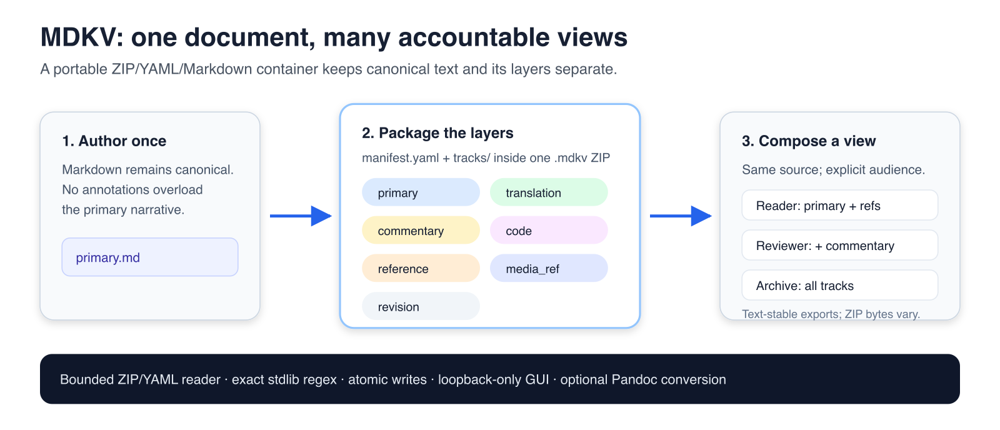

Daniel Ari Friedman
ORCID: 0000-0001-6232-9096
daniel@activeinference.institute
August 10, 2025
DOI: 10.5281/zenodo.16790555
Digital knowledge work increasingly demands documents that are simultaneously multilingual, multi‑audience, and multi‑channel. Traditional single‑file Markdown struggles when the same canonical content must coexist with translations, commentary, references, code exemplars, and revision notes – each with distinct lifecycles and audiences. This paper introduces MDKV, a simple but rigorous multitrack Markdown container that packages a document’s canonical content and auxiliary tracks into a single, portable .mdkv file. An .mdkv is a ZIP archive with a YAML manifest.yaml and a tracks/ directory of UTF‑8 Markdown files. MDKV provides a principled data model, validation, search, and export services, a CLI, and a small GUI for selective preview and live editing. We formalize the MDKV model, present its software architecture, explain round‑trip export semantics, and evaluate design trade‑offs against adjacent technologies. The MDKV initial specification is open source under the Apache‑2.0 license and maintained at the project repository (https://github.com/docxology/mdkv). We also situate MDKV with respect to Matroska (MKV) as background on containerization: although the two are orthogonal in domain (text vs. multimedia), they share conceptual lineage in extensible container design. We conclude with use cases, implications for governance and reproducibility, and future work such as richer validation rules and alternative exporters. This paper is itself a Markdown file that renders into a valid MDKV. The built artifact is available at paper/paper.mdkv; combined exports are under paper/_bundle.

Figure 1. The MDKV workflow: author once, package the layers explicitly, and compose a view for each accountable audience. The graphic is descriptive, not a measured performance result.
Authoring, collaboration, and publishing workflows routinely require: (i) a single canonical text; (ii) multiple translations; (iii) audience‑specific commentary and references; (iv) code listings synchronized with the text; and (v) review and revision notes. Maintaining such layers in separate files and folders creates cognitive load and increases the risk of divergence. The central question is how to preserve a document’s conceptual unity while keeping its layers decoupled for editing, governance, and rendering.
MDKV addresses this need with a multitrack container for Markdown. Rather than overloading a single source with embedded annotations and language variants, MDKV separates concerns into tracks—primary (canonical), translation, commentary, code, reference, media_ref, and revision—and composes views at export time. The container format is intentionally modest: plain Markdown and YAML wrapped in ZIP, optimized for transparency, diff‑friendliness, and longevity.
Design motivations and lineage. MDKV applies general container principles (clear manifest, independent tracks, robust round‑trip) from adjacent domains to plaintext authoring. It favors human‑inspectable, durable primitives over custom binary formats, enabling simple tooling and long‑term readability. The initial public release standardizes a minimal spec and a reference implementation with CLI and GUI.
Contributions. (i) A precise model and container format with minimal but sufficient validation; (ii) a modular architecture separating model, storage, and services, surfaced via CLI and GUI; (iii) detailed use cases spanning multilingual publishing, layered collaboration, reproducible distribution, and governance; and (iv) guidance for cryptographic provenance and conformance.
The Matroska specification, RFC 9559, published in October 2024 by Steve Lhomme, Moritz Bunkus and Dave Rice, defines an audiovisual container based on EBML. Its independently described tracks provide a design analogy here, not evidence that a ZIP/YAML text format inherits Matroska's streaming, recovery or interoperability properties.
MDKV does not implement Matroska or EBML. Historical adoption timelines are not needed to establish the text-container design and are not evaluated in this work.
MDKV is not an MKV editor, wrapper, or derivative; it targets plaintext documents rather than multimedia. The similarity in names is intentional only insofar as both are “container‑centric” designs. MDKV borrows the intuition that many artifacts are multi‑track by nature, but it embraces a radically simpler substrate—Markdown (CommonMark), YAML, and ZIP—to maximize openness, inspectability, and compatibility with standard tooling. Where MKV multiplexes time‑based streams, MDKV co‑packages logically distinct textual layers.
to_markdown() outputs directly.media_ref tracks, keeping bundles lean while links remain explicit and reviewable.manifest.yaml is explicit and auditable; no hidden state.An .mdkv file is a ZIP archive that contains:
manifest.yaml: top‑level document metadata and an index of trackstracks/: UTF‑8 Markdown files, one per trackTrack text is CommonMark-compatible. The reference HTML renderer also enables pipe tables; arbitrary raw HTML is escaped. This is a renderer profile, not a new binary or media format.
Top‑level fields (required unless noted):
title: stringauthors: list[string] (at least one)created: ISO‑8601 datetime stringversion: string (optional; default "0.1")metadata: object<string,string> (optional)tracks: list[Track] (optional at the schema level, but at least one primary track is required by validation)Track object fields:
track_id: string (unique within the document)track_type: one of primary, translation, commentary, code, reference, media_ref, revisionlanguage: string or null (BCP‑47/ISO‑639 recommended for linguistic content)path: a relative POSIX path below tracks/, without empty, dot, parent, backslash or NUL components; paths SHOULD end with .md.Example manifest:
title: Example
authors: ["Author"]
created: 2025-01-01T00:00:00Z
version: "0.1"
metadata: {}
tracks:
- track_id: primary
track_type: primary
language: en
path: tracks/primary.md
- track_id: notes
track_type: commentary
language: null
path: tracks/notes.md
Field overview:
| Field | Type | Required | Notes |
|---|---|---|---|
title |
string | yes | Document title |
authors |
list[string] | yes | At least one author |
created |
ISO‑8601 string | yes | UTC recommended |
version |
string | no | Default "0.1" |
metadata |
map[string,string] | no | Freeform key/value pairs |
tracks |
list[Track] | schema‑optional | Validation requires at least one primary |
Track descriptor overview:
| Field | Type | Required | Notes |
|---|---|---|---|
track_id |
string | yes | Unique within the document |
track_type |
enum | yes | One of primary, translation, commentary, code, reference, media_ref, revision |
language |
string or null | no | BCP‑47 recommended for linguistic tracks |
path |
string | yes | Must start with tracks/ |
Below is a compact, realistic multi‑track container using several track types side‑by‑side. This illustrates how translations, commentary, code listings, references, media references, and revisions live next to the canonical primary track.
Manifest:
title: Product Onboarding Guide
authors: ["Tech Docs Team"]
created: 2025-06-01T12:00:00Z
version: "0.1"
metadata:
audience: "customer, internal"
tracks:
- track_id: primary
track_type: primary
language: en
path: tracks/primary.md
- track_id: ru
track_type: translation
language: ru
path: tracks/ru.md
- track_id: zh
track_type: translation
language: zh
path: tracks/zh.md
- track_id: commentary
track_type: commentary
language: null
path: tracks/commentary.md
- track_id: snippets
track_type: code
language: null
path: tracks/snippets.md
- track_id: refs
track_type: reference
language: null
path: tracks/refs.md
- track_id: media
track_type: media_ref
language: null
path: tracks/media.md
- track_id: release_notes
track_type: revision
language: null
path: tracks/release_notes.md
Track bodies (excerpts):
<!-- track:primary type:primary lang:en -->
# Welcome
Follow these steps to get started.
<!-- track:ru type:translation lang:ru -->
# Добро пожаловать
Выполните следующие шаги, чтобы начать.
<!-- track:zh type:translation lang:zh -->
# 欢迎
请按照以下步骤开始。
<!-- track:commentary type:commentary lang:None -->
Editors: confirm screenshots match v1.3 UI before release.
<!-- track:snippets type:code lang:None -->
```bash
uv run mdkv init --title "Guide" --author "Docs" --out guide.mdkv
```
<!-- track:refs type:reference lang:None -->
- Quickstart video: media:gui_demo.webm
- Markdown spec: https://commonmark.org
<!-- track:media type:media_ref lang:None -->
assets/gui_demo.webm # external file shipped alongside exported package
<!-- track:release_notes type:revision lang:None -->
- 2025-06-15: Updated step 2 for new sign‑in flow.
Combined exports concatenate track bodies in manifest order with informational attribution headers. Literal header-like content is not escaped into a reversible framing protocol.
Use paper/build_paper_bundle.sh --no-clone to package the explicitly attributed authored source. The following manifest illustrates the same model:
manifest.yaml with at least one primary track and metadata:title: "MDKV: A Multitrack Markdown Container for Structured, Portable Documents"
authors: ["Daniel Ari Friedman"]
created: 2025-08-10T00:00:00Z
version: "0.1"
metadata:
doi: "10.5281/zenodo.16790555"
orcid: "0000-0001-6232-9096"
contact: "daniel@activeinference.institute"
tracks:
- track_id: primary
track_type: primary
language: en
path: tracks/primary.md
Place the authored body in tracks/primary.md; a ZIP may use implicit tracks/
prefixes rather than an explicit directory entry. The owning bundle builder
validates metadata and content, emits current exports and records their provenance.
CLI (linked): see docs/cli.md. Minimal sequence:
uv run mdkv init --title "MDKV Paper" --author "Daniel Ari Friedman" --out paper.mdkv
uv run mdkv update-track paper.mdkv --id primary --file paper/mdkv_paper.md
uv run mdkv set-meta paper.mdkv doi 10.5281/zenodo.16790555
uv run mdkv validate paper.mdkv
uv run mdkv info paper.mdkv
MDKV’s base validator enforces:
title, authors, and at least one primary trackpath begins with tracks/track_type is one of the supported valuestrack_id is non‑empty and uniquelanguage is a string or null; BCP-47 is recommended, not syntactically enforcedThe intentionally small rule set preserves extensibility while ensuring minimal integrity guarantees for downstream services.
Implementation note: the reference validator checks for the presence of a track whose track_type is primary (mdkv/core/validate.py), matching the rule above rather than requiring the specific id primary.
Combined Markdown includes a comment encoding track metadata. These are attribution hints, not a lossless reconstruction grammar; ZIP/JSON are the structured interchange paths. Native PDF/EPUB/DOCX conversion composes the selected body plus allowlisted frontmatter directly, so these comments do not become visible publication text:
<!-- track:primary type:primary lang:en -->
Title
<!-- track:notes type:commentary lang:None -->
Editorial notes here
The MDKV container is defined by the following MUST/SHOULD requirements:
.mdkv MUST be a ZIP archive with one unambiguous root manifest.yaml and indexed UTF-8 track members under tracks/ (directory entries may be implicit).track_id, registered track_type and safe relative path. language is optional and defaults to null. The metadata map contains string values, with documented safe scalar normalization.track_type: primary MUST be present.manifest.yaml for human readability, though ordering is not semantically significant.code tracks are listings, not runnable notebooks; execution belongs to downstream systems.media_ref instead of embedded to keep bundles lean and editable.created is recorded; versioning/history are external concerns.MDKV follows a thin‑orchestrator, modular architecture:
mdkv.core: data model and validationmdkv.storage: persistence (read/write .mdkv)mdkv.services: search and export utilitiesmdkv.cli: CLI entry points and subcommandsThis separation enables stable public APIs, testable modules, and straightforward extension.
mdkv.core)The core defines two primary classes:
Track: a single Markdown track with track_id, track_type, language, path, content, and invariant checks (valid type, non‑empty id, path under tracks/).MDKVDocument: an in‑memory aggregate with metadata (title, authors, created, version, and metadata map) and a mapping track_id → Track. It provides helpers for adding/removing tracks, renaming, content updates, language listing, and metadata set/get/remove.The core also surfaces allowed_track_types() and validation types (ValidationError, ValidationIssue).
mdkv.storage)ZIP + YAML persistence:
save_mdkv(doc, output_path): write tracks under tracks/ and emit manifest.yaml from the document.load_mdkv(input_path): parse the manifest and reconstruct the document, loading each track’s content.The manifest lists metadata and track descriptors; bodies remain discrete files for transparency and editability.
mdkv.services)Services operate over MDKVDocument instances without owning container I/O:
re matching with optional track_type/language filters, supervised deadline enforcement and bounded pages; sync and async APIs share results.to_markdown(), primary‑track HTML via to_html() using markdown‑it‑py, and per‑track files via export_to_files().diff_documents() results and textual compute_stats() counts; neither is an empirical benchmark.mdkv.cli)Thin orchestrators for: init, info, validate, track ops, search, export, metadata, and GUI. Commands call module APIs directly for testability and minimal command‑layer logic.
mdkv.gui)The local GUI has a canonical single-track editor and independent preview checkboxes. POST /api/render/tracks_html renders subsets; GET /api/track?track_id=... reads a literal track identifier and PUT /api/track updates an existing track without parsing display comments. GET /api/render/markdown remains a combined presentation export. Browser operations serialize pending edits before switches/saves. State is shared across clients; persistence uses the same atomic save_mdkv writer as the CLI.
docs/architecture.md (built locally with Sphinx; there is no hosted docs site).mdkv/core/model.py defines Track, MDKVDocument, and invariants; re‑exported via mdkv/__init__.py.mdkv/storage/io.py implements save_mdkv and load_mdkv (ZIP + YAML manifest and tracks/).mdkv/services/export.py (to_markdown, to_html, export_to_files); search in mdkv/services/search.py. Both are re‑exported at the top‑level package for a stable public API.mdkv/cli/main.py surfaces subcommands (init, info, validate, track ops, search, export, gui).mdkv/gui/server.py provides POST /api/render/tracks_html for subset rendering; static assets under mdkv/gui/static/.Data flow summary (see also the repository README.md and docs pages):
MDKVDocument, add tracks; validate.save_mdkv writes tracks/ and manifest.yaml into a .mdkv ZIP; load_mdkv reconstructs.search_document filters/matches; to_markdown and to_html export views; export_to_files writes per‑track files. For end‑to‑end CLI usage, see docs/cli.md.The top‑level mdkv package re‑exports the public API to provide a stable surface:
MDKVDocument, Track, allowed_track_types, ValidationError, validate_document, validate_track, ValidationIssuesearch_document, search_document_async, SearchMatch, diff_documents, DiffResult, compute_stats, DocumentStatsto_markdown, to_html, export_to_files, to_pdf, to_epub, to_docxsave_mdkv, save_mdkv_incremental, load_mdkv, MDKVFormatError, TrackHistory, TrackVersionTrackTypeRegistry, register_track_type, get_registryThis consolidation supports both script‑level usage and library integrations without deep import paths.
# use an existing uv installation; no installer is run by the builder
# from repo root
uv sync --locked --extra dev
uv run pytest -q
uv run mdkv --help
uv run mdkv init --title "Doc" --author "You" --out doc.mdkv
uv run mdkv info doc.mdkv
uv run mdkv validate doc.mdkv
uv run mdkv list-tracks doc.mdkv
uv run mdkv add-track doc.mdkv --id notes --type commentary --lang "" --content "Note"
uv run mdkv rename-track doc.mdkv --old-id notes --new-id commentary
uv run mdkv update-track doc.mdkv --id commentary --content "Updated note"
# export selected track types to Markdown
uv run mdkv export-tracks doc.mdkv --types primary,commentary > exported.md
# export HTML of primary track
uv run mdkv export --html doc.mdkv > primary.html
# launch GUI
uv run mdkv gui --path doc.mdkv
from pathlib import Path
from datetime import datetime, timezone
from mdkv import MDKVDocument, Track, export_to_files, to_markdown, save_mdkv, validate_document
# write selected tracks as individual .md files
doc = MDKVDocument(title="Doc", authors=["You"], created=datetime.now(timezone.utc), version="0.1")
doc.add_track(Track(track_id="primary", track_type="primary", language="en", path="tracks/primary.md", content="# Hello\n"))
# validate, save, export
validate_document(doc)
save_mdkv(doc, Path("doc.mdkv"))
export_to_files(doc, Path("out_tracks"), include_track_types=["primary", "commentary"])
# combined markdown (for pandoc or review)
combined_md = to_markdown(doc)
Path("combined.md").write_text(combined_md, encoding="utf-8")
# 1) Initialize
uv run mdkv init --title "Paper" --author "Author" --out paper.mdkv
# 2) Add tracks
uv run mdkv add-track paper.mdkv --id ru --type translation --lang ru --content "# Резюме\n..."
uv run mdkv add-track paper.mdkv --id zh --type translation --lang zh --content "# 摘要\n..."
uv run mdkv add-track paper.mdkv --id commentary --type commentary --content "Editors: tighten abstract."
uv run mdkv add-track paper.mdkv --id code --type code --content '```bash
uv run pytest -q
```'
uv run mdkv add-track paper.mdkv --id refs --type reference --content "- CommonMark: https://commonmark.org"
uv run mdkv add-track paper.mdkv --id media --type media_ref --content "docs/_static/gui_demo.webm"
uv run mdkv add-track paper.mdkv --id revisions --type revision --content "- 2025-08-10: camera‑ready edits"
# 3) Inspect and validate
uv run mdkv list-tracks paper.mdkv | jq .
uv run mdkv validate paper.mdkv
# 4) Search (only Russian translations for TODO/FIXME)
uv run mdkv search paper.mdkv --pattern "TODO|FIXME" --types translation --languages ru | jq .
# 5) Export views
uv run mdkv export-tracks paper.mdkv --types primary,translation > combined.md
uv run mdkv export --html paper.mdkv > primary.html
MDKV’s track taxonomy encodes common document layers:
primary: canonical content intended for publication and primary consumption.translation: language alternatives to primary, preserving structure but adapting language and, where necessary, locale.commentary: editorial guidance; excluded by default from HTML, but included by default in unfiltered combined Markdown. Public Markdown should explicitly select --types primary.code: code listings and examples that remain synchronized with the narrative; not intended as executed notebooks.reference: citations and reference lists, metadata‑heavy but typically orthogonal to primary structure.media_ref: references to external media (figures, videos) that are managed outside the container but linked textually.revision: review notes and change summaries; useful for governance, release notes, and compliance trails.Semantically, MDKV treats tracks as parallel layers; it does not prescribe alignment at paragraph or section granularity. Alignment strategies (e.g., anchor conventions) can be layered atop the format by convention when needed.
Minimal by design to maximize compatibility while catching common integrity issues. Optional profiles can enforce stricter policies (e.g., translation coverage, mandatory references) without compromising baseline portability. See Appendix C for an example of bundle metadata and checksums emitted by the paper builder.
primary track: Add at least one primary track; ensure track_type: primary.path: Ensure path starts with tracks/ and corresponds to a file in the container.track_type: Use only the allowed set; see section 7.authors: Provide at least one author string.created: Use ISO‑8601 (e.g., 2025-08-10T00:00:00Z).track_id: Ensure each track_id is unique; rename or remove conflicts.track_type change: When changing a track’s type, ensure downstream exporters are aware of filtering.Regex search across selected tracks and languages enables cross‑cutting queries (e.g., beta‑flagged commentary in Spanish). Export is deterministic given a manifest and track set:
primary track to HTML for simple distribution channels, leveraging a standard Markdown engine..md files for downstream pipelines.These capabilities support reproducible publishing.
Programmatic search is available via mdkv.services.search.search_document(doc, pattern, track_types=None, languages=None); the CLI mirrors this with uv run mdkv search <path> --pattern PATTERN [--types ...] [--languages ...].
Combined export headers assist human attribution; they are not reversible identifiers for arbitrary bodies. Native conversion uses restricted Pandoc defaults; PDF requires trusted source and an existing engine.
mdkv.primary (en), translation (ru, zh, …).track_id values for ISO language tags where possible (e.g., ru, zh-Hans).commentary, revision alongside primary.commentary; change summaries accrue in revision; public exports omit commentary; internal exports include it for audit and coaching.revision as append‑only; include date stamps for traceability.code for listings; optional media_ref for demos.code; search across code and primary for API drift; export code‑only bundles for IDE extensions and full docs for websites.code listings with tested snippets in CI; consider tangling to source when appropriate.reference for citations/bibliography; optional commentary for reviewer notes.reference; export tight submissions without commentary; archive complete .mdkv with all layers for reproducibility.reference tracks and keep DOIs/URLs explicit.revision for change logs; document metadata fields for release info.revision; embed DOI, version, or policy IDs in metadata; export for auditors or regulators with selected layers.commentary (internal notes), reference (appendices), media_ref (assets).primary only; export internal bundles with commentary and references for onboarding/support teams.INTERNAL:) to aid filtering.manifest.yaml readability..mdkv for archives; include checksums and optional signatures; consumers can inspect and transform with standard tooling.BUNDLE_INFO.yaml with source commit metadata when available.revision + metadata expose intent and review structure..mdkv bundles are not encrypted; sensitive content SHOULD be managed with appropriate transport and storage controls (e.g., encryption at rest, signed artifacts).metadata may contain personally identifiable information; producers SHOULD minimize PII and consumers SHOULD handle metadata under applicable policies.The examples in this paper and library/definitions/ are authored synthetic
demonstrations, not empirical datasets. This work reports no user study,
comparative benchmark, empirical validation of an active-inference model, or
measured improvement in governance, collaboration, cognition or merge-conflict rates. The use-case
benefits are design motivations and hypotheses, not experimental findings.
For implementation assurance, the repository's versioned release receipt records the exact runtime, commands, source binding and observed checks. Statement coverage measures executed statements, not conformance completeness or security. The defensive review models a malicious document supplier and a website attempting access to the loopback GUI; hostile same-user processes, collaborative concurrency and external Pandoc/LaTeX resource policies remain outside that model. History helpers are standalone in-memory objects; MDKV does not automatically persist edits as revision history. Unknown ZIP members and unknown manifest keys are not preserved by model-based save/load roundtrips.
metadata for integrity verification after transport..mdkv archive (e.g., using minisign or GPG) and distribute the signature alongside the artifact. Consumers SHOULD verify signatures prior to ingest in security‑sensitive contexts.to_markdown() with pandoc‑compatible flags/templates; retain track headers to assist provenance.tracks/ and encode provenance in metadata.MDKV introduces a practical, minimal, and extensible approach to multitrack textual documents. By embracing simple, durable primitives (Markdown, YAML, ZIP) and separating core modeling from storage and services, MDKV enables multilingual and multi‑audience authoring without branching, improves governance through explicit layer semantics, and supports reproducible publishing. As the ecosystem evolves, MDKV can integrate stronger validation profiles and richer exporters while preserving its core promise: a small, inspectable container for structured documents that travels well and ages gracefully.
primary, translation).The informational header emitted in combined exports has the following shape. It does not distinguish literal header-like text in a track body and must not be used as a lossless parser:
<!--\s+track:{track_id}\s+type:{track_type}\s+lang:{language}\s+-->
When language is unspecified, the literal text None is emitted for {language}.
# export only the primary track, with explicit title/author frontmatter
uv run mdkv export paper.mdkv --types primary --metadata-header > primary.md
pandoc primary.md --resource-path=paper --pdf-engine=xelatex -o primary.pdf
# show manifest summary and tracks
uv run mdkv info paper.mdkv | sed -n '1,60p'
# validate and list tracks
uv run mdkv validate paper.mdkv
uv run mdkv list-tracks paper.mdkv
You need layered authorship: separate canonical text, translations, commentary, references, code listings, and revisions without branching the project.
You want reproducible bundles: deterministic exports and manifest‑driven structure make builds auditable.
You prefer plain text pipelines: leverage Markdown/YAML and existing tools (git, grep, pandoc) rather than custom ecosystems.
You need selective exports: tailor by track types or build explicit track views; direct language filtering is a search feature.
You need to be able to edit the document via multiple tools: MDKV is a container for text, not a text editor.
You want to use an open source format to ensure long-term compatibility: MDKV is a small, simple, modular, and well-documented format that is licensed under the Apache 2.0 license.
track_id: string, unique per document
track_type: one of primary, translation, commentary, code, reference, media_ref, revision
language: BCP‑47 code or None
This appendix sketches the files created by the builder (paper/build_paper_bundle.py) to support reproducible publication and verification.
paper/paper.mdkv: ZIP archive with manifest.yaml and tracks/ (e.g., tracks/primary.md, optional tracks/references.md).paper/_bundle/paper.md: primary-only Markdown with title/author frontmatter; the reference track is not duplicated in the publication stream.paper/_bundle/paper.html: HTML of the primary track from to_html().paper/_bundle/tracks/: individual per‑track Markdown files exported for distribution pipelines.paper/_bundle/figures/: copied SVG/PNG figure assets referenced by the manuscript.paper/_bundle/BUNDLE_INFO.yaml: source/builder/lock hashes, runtime versions, timestamps, dirty state and optional exact clone identity.paper/_bundle/CHECKSUMS.yaml: exact artifact SHA-256 digests, with keys relative to the bundle directory's parent (including custom output names).Example excerpt of BUNDLE_INFO.yaml:
generated_at: 2025-08-10T12:34:56Z
source_markdown: mdkv_paper.md
output_mdkv: paper.mdkv
repo_url: https://github.com/docxology/mdkv
cloned_commit: 0123abcd...
builder_commit: 89ef4567...
Example excerpt of CHECKSUMS.yaml:
_bundle/paper.html: 7f4c2b...
_bundle/paper.md: 8b91fe...
_bundle/tracks/primary.md: 0b12aa...
_bundle/figures/mdkv-graphical-abstract.png: 9d31c0...
paper.mdkv: 5c44d1...